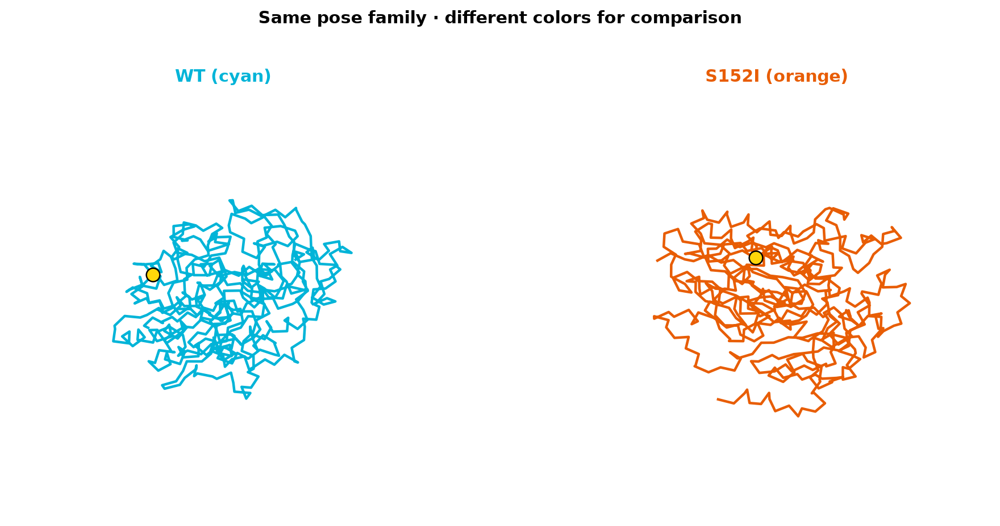
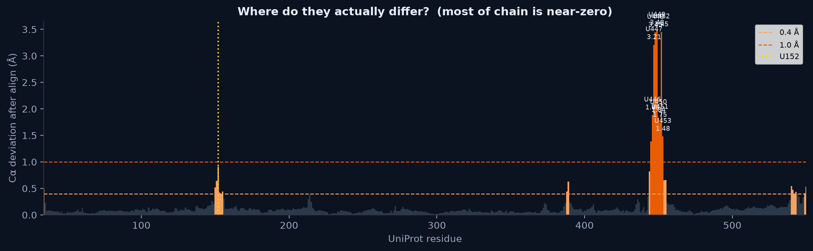
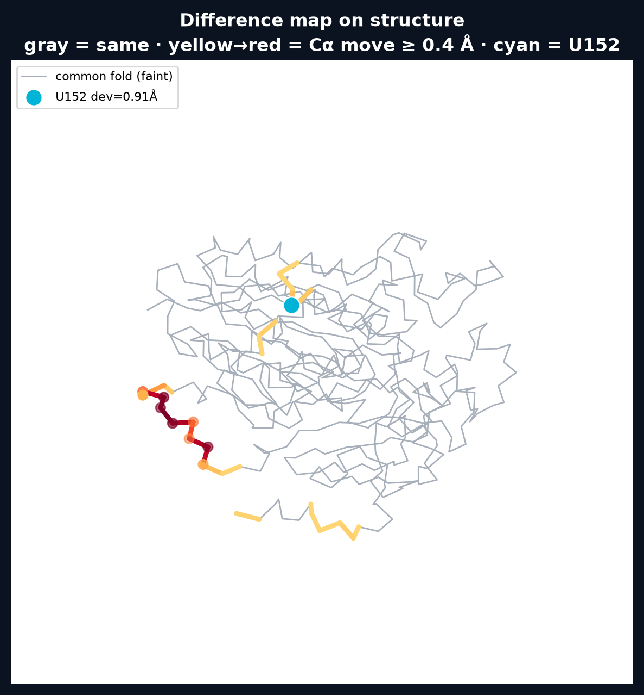
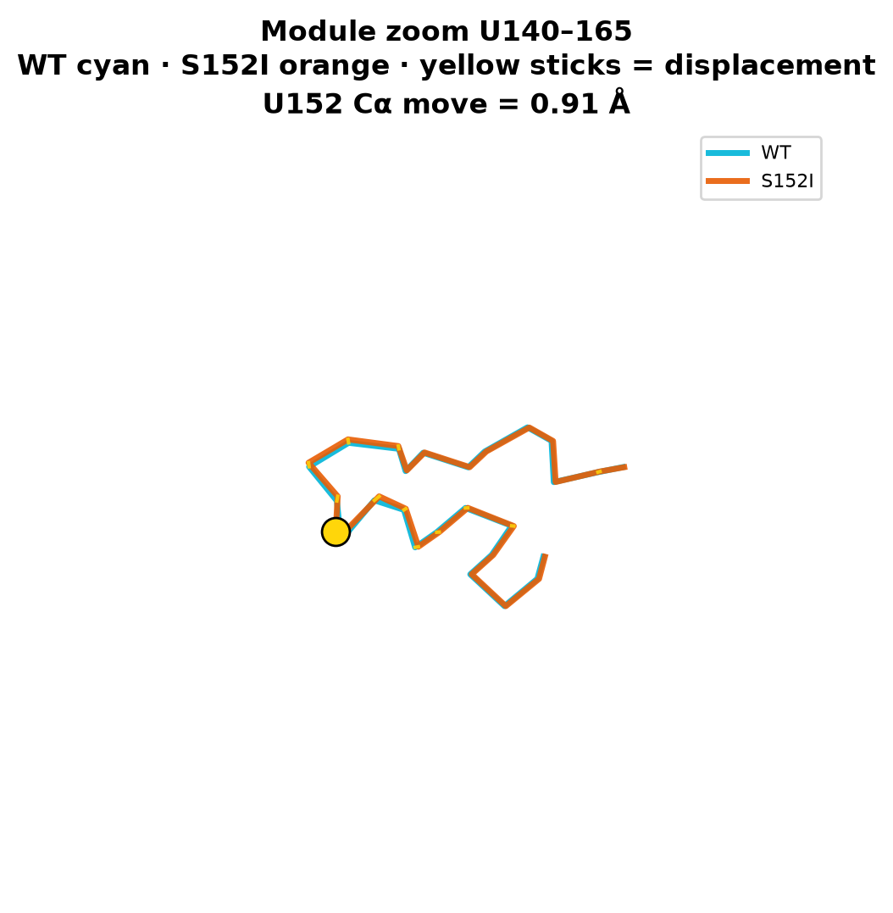
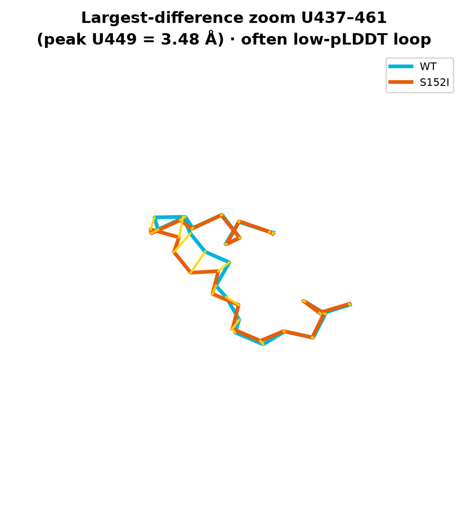
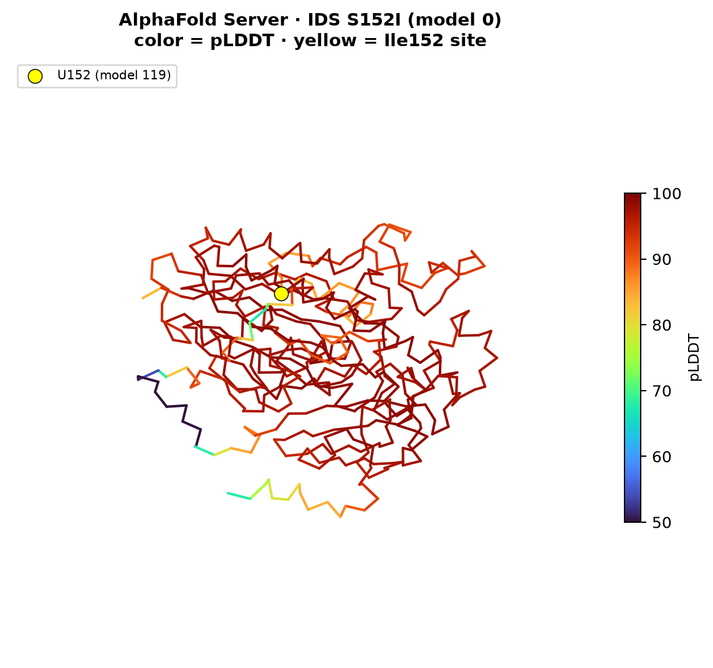

AlphaFold Server · viewer (스냅샷 · 차이 · 3D)
AF 구조 보기
job 목록·상태는 AF목록 페이지. 여기는 그림·3D로 직접 확인하는 페이지.
3D: cd ~/Desktop/IDSX/website && python3 -m http.server 8765 → http://localhost:8765/pages/structures.html
1. 스냅샷 (고정 색 · 비교용)




1b. 차이 나는 구간만 (추가 레이어)
전체가 똑같은 것처럼 보이는 이유: 잔기의 절반 이상이 Cα 이동 < 0.1 Å 수준.
아래는 정렬 후 실제로 움직인 자리만 강조한 그림이다 (기존 오버레이를 대체하지 않음).
| 지표 | 값 |
|---|---|
| Global Cα RMSD | ~0.37 Å |
| Cα 이동 ≥ 0.5 Å | 19 residues |
| Cα 이동 ≥ 1.0 Å | 9 residues |
| U152 (변이 자리) | ~0.91 Å (상위권이지만 최대는 아님) |
| 최대 차이 | U449 부근 ~3.5 Å (저-pLDDT 루프 · 해석 주의) |





읽는 법: 전체 오버레이가 겹친다 = AF가 native-like fold를 비슷하게 그림.
차이 맵에서 U152 근처와 일부 루프만 움직인다 = 대붕괴가 아니라 국소·제한적 차이.
최대 피크가 C-말단 저신뢰 루프인 점은 과대해석 금지.
숫자 표: per_residue_ca_diff.csv
1c. MULTI×4 결과 (핫스팟 4개 동시) — 추가
유효 MULTI×4 폴더 (유일):
Desktop/IDSX/fold_y108c_d148n_s152i_d308g_ids/
서열: Y108C + D148N + S152I + D308G ✅
동일 서열 중복 폴더(fold_r88c_… 등)는 삭제함. 목록: AF목록
서열: Y108C + D148N + S152I + D308G ✅
동일 서열 중복 폴더(fold_r88c_… 등)는 삭제함. 목록: AF목록
| 비교 | Global RMSD | ≥1 Å 잔기 | U152 이동 | mean pLDDT |
|---|---|---|---|---|
| WT vs S152I | 0.37 Å | 9 | 0.91 Å | 94.7 |
| WT vs MULTI×4 | 0.35 Å | 16 | 0.83 Å | 94.6 |
결론: 변이를 4개 한꺼번에 넣어도 AF 전체 fold는 여전히 WT와 거의 같음. → 핫스팟 순위가 “AF 좌표를 크게 바꾸는 순위”는 아님. 국소: U108 이동 1.05 Å · pLDDT 75.8 (단일 S152I보다 자리 신호는 조금 더 보임).


분석 전문: AF2_runs/AF3_analysis/multi_x4/00_MULTI_x4_분석.md
2. 인터랙티브 3D
로딩 중…
WT only
청록 단일 색 · 노란 구 = Ser152
S152I only
주황 단일 색 · 노란 구 = Ile152
+ Overlay (Kabsch 정렬: WT → S152I 좌표계)
한 화면에 두 모델. 색이 다르므로 어긋난 구간이 보이면 쉽게 구분됩니다.
(전역은 거의 겹침 · RMSD ~0.37 Å)
3. (참고) pLDDT 색 버전
신뢰도 색은 비교보다 “어디가 불안한가”용. 나란히 두면 둘 다 비슷해 보여 헷갈릴 수 있음.


수치·해석: 계산 페이지